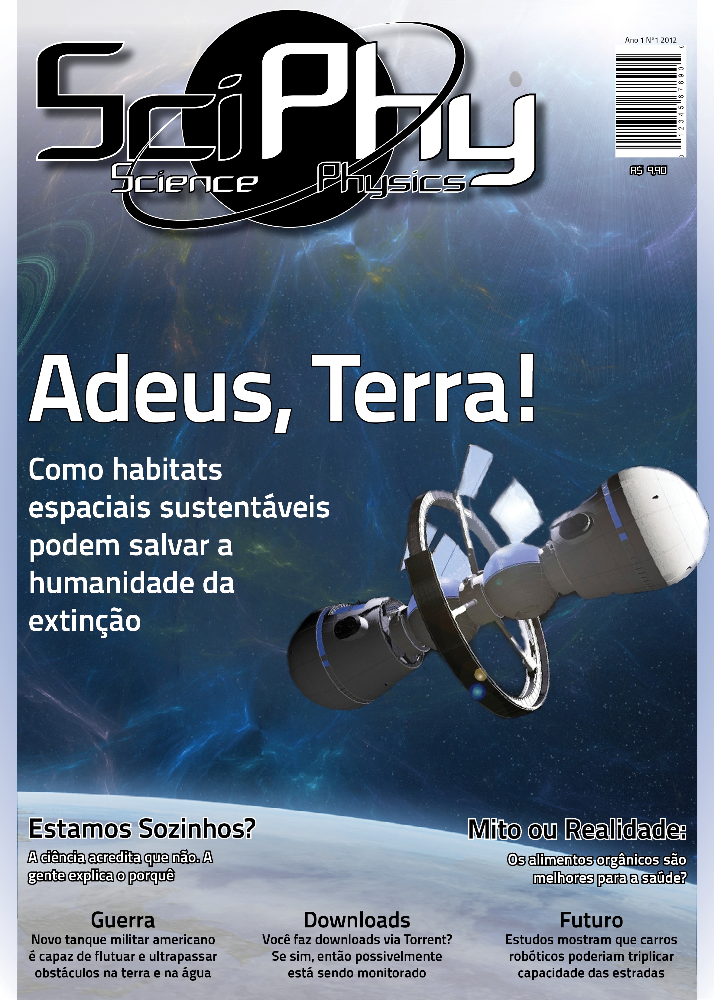
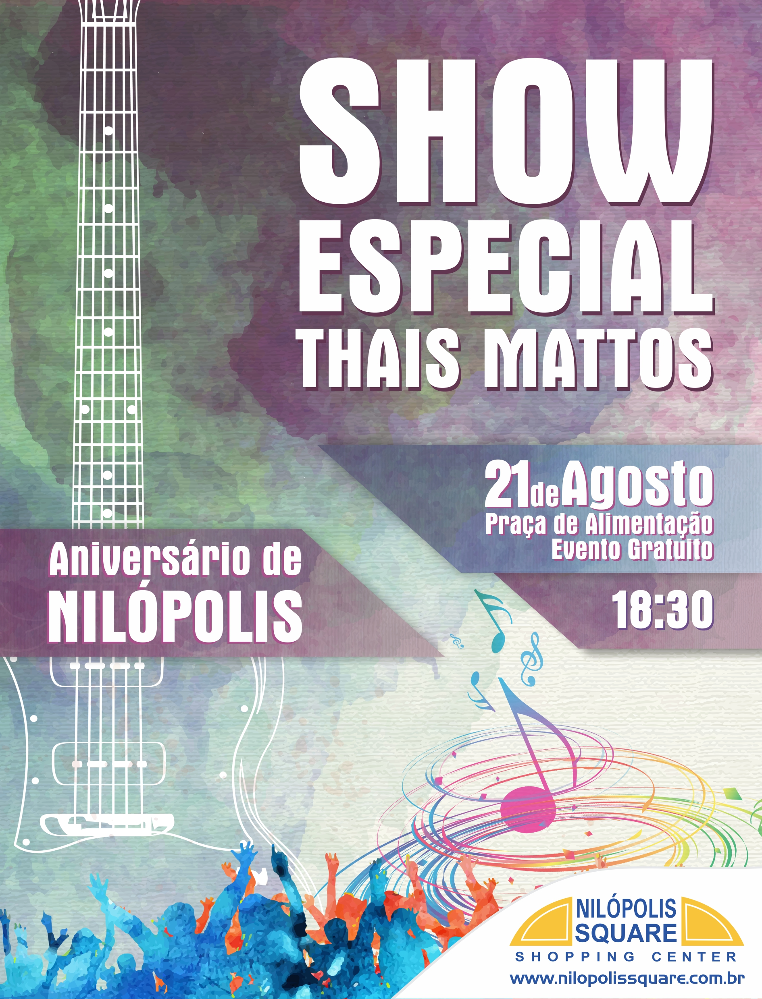
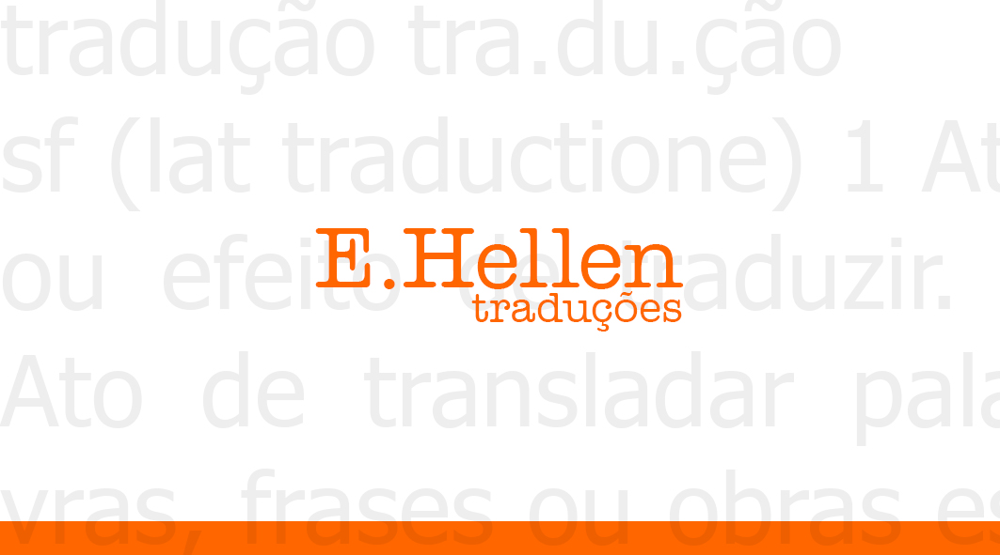
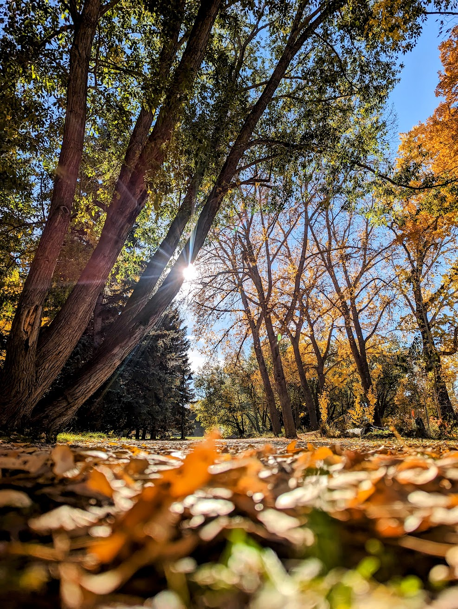
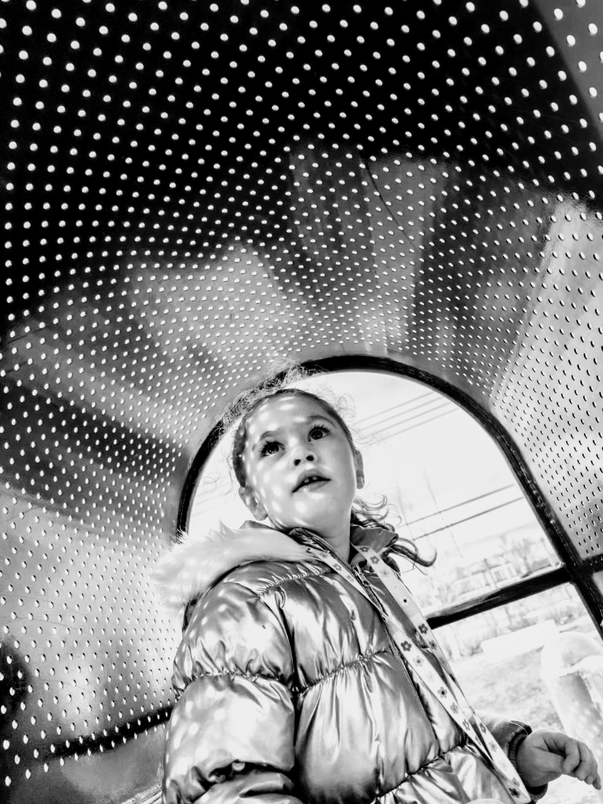
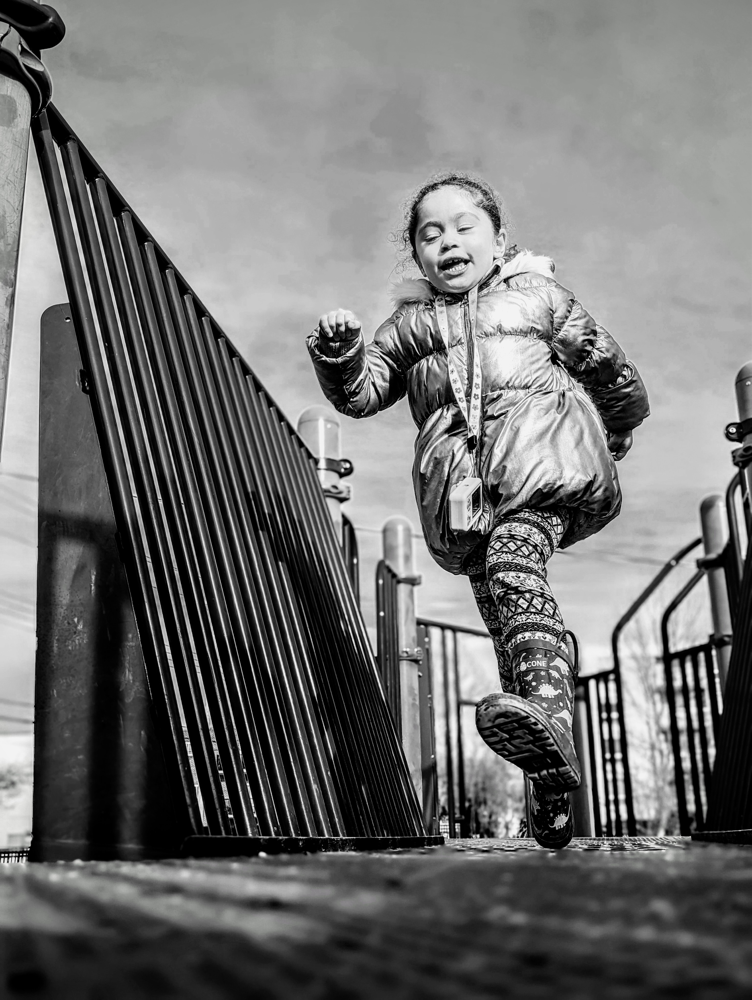
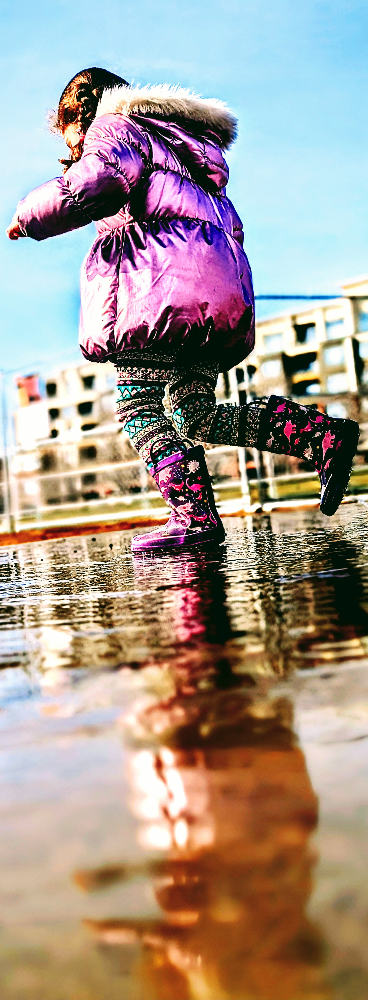
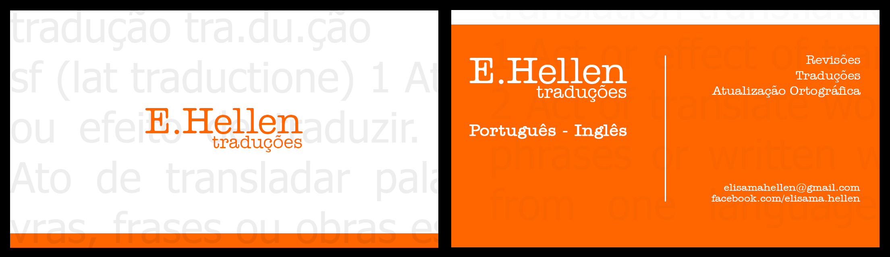

02
Design




Portfolio — MSc Computational Media Design
Visual designer, photographer, and narrative writer. A decade of professional practice across print, digital, and editorial media — now focused on the intersection of storytelling, world-building, and computational craft.
I hold a Bachelor of Science in Industrial Design with a specialization in Graphic Design from Universidade Estácio de Sá, Rio de Janeiro, and a postgraduate certificate in Industrial and Organizational Psychology.
My professional practice spans a decade of client work across branding, print, digital, and editorial media in Brazil, alongside ongoing independent design and a published poetry anthology credit in 2024.
For the past several years, my primary creative project has been an epic fantasy novel set in the world of Ethernos — a large-scale narrative system with original cosmology, a hard magic framework, and a cast of characters navigating civilization-scale stakes. I am interested in how computational tools and interactive media can extend, complicate, and deepen the practice of narrative world-building.




View full ⤢
View full ⤢
View full ⤢
View full ⤢Narrative Verse · Original Poetry
Before the first of us was born, the forest breathed without a morn. The silent trees spoke to none, neither wind nor empty stone. The living things would grow and fall, without a name or home at all. And no one held their memory, or marked their place in history.
Read the poemEpic Fantasy · Novel in Progress
The cry of "Land ho!" came as Solarie began her weary descent, staining the southern clouds purple and orange. A cold, black coastline rose ahead, jagged as broken teeth against the bruised sky. Frosthelm crept into view, less a city than a scatter of flickering lights clutching the shoreline, all but swallowed by sea and snow.
Read the chapterThis portfolio was assembled in support of an application to the MSc Computational Media Design program at the University of Calgary. I am interested in research at the intersection of narrative design, world-building systems, and computational media.
Editorial Design · InDesign CS6 · 2012
Science & Physics Magazine — College Thesis Project
A complete 24-page science magazine designed and edited as an undergraduate thesis project at Universidade Estácio de Sá. The project encompasses the full editorial pipeline: masthead design, typographic grid, cover hierarchy, interior spreads with multi-column body text, pull quotes, section headers, advertisements, and photography direction. Created in Adobe InDesign CS6 and produced to print-ready standards.
Editorial Design · 2016
Complete Book Cover Design — Front, Spine & Back
A complete book cover design for a debut YA fantasy novel, including the front cover illustration and typography, spine layout, and full back cover with synopsis, author biography, publisher logo, barcode, and excerpt pull quote. Demonstrates integrated typographic and visual thinking across a single printed object.
View full ⤢
Event Poster · Large Format Print · 2014
Nilópolis Square Shopping Center — Anniversary Event
Large-format event poster (48×63cm) for a live music event at a Rio de Janeiro shopping center. The design uses layered watercolor washes, a linear guitar illustration, and typographic hierarchy across multiple levels of information: headline act, event details, venue, and time.
Brand Identity · Business Card Design
Visual Identity — Translation Services
A two-sided business card using dictionary-definition typography as a background texture — a conceptual approach that embeds the nature of the service into the visual language of the card itself. The front uses a minimal logo mark with a gradient gold ring; the back carries contact and services information against an all-over orange field. The system demonstrates brand thinking that extends concept into execution.

View full ⤢Original Verse · Epic Fantasy · Ethernos
A creation myth from the world of Ethernos, written in the oral tradition of the forest peoples
This poem is an in-world artefact from an ongoing epic fantasy novel. It functions as a creation myth for a forest civilization, tracing the origin of their people through the love between a mortal healer and the god Sylvarius. Written in an English oral-tradition cadence, it was composed as part of the novel's world-building practice — an attempt to build culture from the inside out, through the texts a people might actually carry.
Epic Fantasy Novel · Ethernos · First Draft
Hearth of the Frostlands — from an ongoing novel set in the world of Ethernos
This chapter introduces the northern city of Frosthelm and is presented here as a working draft. The novel follows a diverse ensemble cast working against time to prevent a cataclysm threatening the world of Ethernos. This chapter was chosen for the portfolio because it demonstrates character voice, ensemble dynamics, cultural world-building through immersive detail, and narrative tension without reliance on action — skills I am most interested in developing through graduate research.